Configurable Logic Block (CLB)#
The Configurable Logic Block (CLB) is a peripheral exclusive to C2000 devices that allows users to incorporate custom logic without the need for an external logic device such as an FPGA or CLPD. The CLB peripheral itself is made up of a number of tiles, each composed of various submodules that combine together to enable the implementation of custom digital logic functions. The CLB can also be connected to other existing control peripherals on the device to enhance their functionality and provide even more design options.
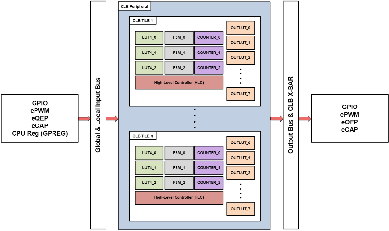
Currently, there are three different versions of the CLB peripheral. Each incremental version of the peripheral offers additional features on top of all capabilities of previous versions. For information about the differences between the CLB types, refer to the Configurable Logic Block (CLB) Module section of the C2000 Peripherals Guide.
CLB Type |
Devices |
|---|---|
1 |
F28x7x, F2837xS, F2837xD |
2 |
F28004x |
3 |
F28002x, F28003x, F2838x |
Applications of CLB#
The CLB is a powerful tool that can be used in a variety of applications. The CLB can be used as a replacement for external custom logic devices, resulting in reduced system cost and reduced board area. Because the CLB is built directly into the C2000 device, it has direct access to other on-chip peripherals, resulting in reduced feedback latency and improved control loop times. In addition, the CLB has an additional advantage over external logic devices in that all timing requirements between the CLB and CPU are automatically met.
Given the customizability of the CLB, there are many possible applications of this peripheral. The C2000Ware SDK provides a variety of simple cases as well as more comprehensive implementations using the CLB. Specific examples of applications of the CLB include the following:
Customized General Purpose Outputs (CLB example 1)
Signal Conditioning and Intelligent Filtering (CLB example 2)
Complex PWM generation (CLB example 3)
Advanced PWM Protection and Dead-Band Compensation (CLB example 4)
Task Profiling and Time Threshold Monitoring (CLB example 5)
Complex Signal Capture and Sequence Detection (CLB example 6)
Additionally, the MotorControl SDK showcases use of the CLB in pulse-train output (PTO) applications as well as position sensing and absolute encoder interfaces. The CLB is not limited to these specific applications, and there are many more use cases that the CLB can be purposed in.
CLB Tile Architecture#
The Configurable Logic Block peripheral is made up of a number of individual CLB “tiles”. A tile is essentially a collection of logic blocks which interconnect to perform different logical operations. Depending on the device, the number of tiles can range from 2 tiles up to 8 tiles. Each individual CLB tile has 8 inputs and 8 outputs. These external connections are known as the CLB tile’s BOUNDARY connections (BOUNDARY_INx and BOUNDARY_OUTx). Outputs of one tile can serve as inputs into another, further expanding the possible functionality of the CLB peripheral. The following table describes the number of CLB tiles in the current generation of C2000 devices.
Device |
No. of CLB Tiles |
|---|---|
F28002x |
2 |
F28x7x, F2837xS, F2837xD |
4 |
F28003x |
4 |
F28004x |
4 |
F2838x |
8 |
[[y! CLB Peripheral is Package-Dependent The CLB peripheral is included only in specific device packages. Refer to the Device Comparison table within the specific device family’s datasheet to verify the number of CLB tiles in the device package.
Each tile is composed of a number of configurable blocks (submodules) that serve specific functions and can be used together. The types and quantity of submodules in each CLB tile are as follows:
Three 4-input Lookup Tables (LUT4)
Three Finite State Machines (FSM)
Three Counters
Eight Output 3-input Lookup Tables (OUTLUT)
One High-Level Controller (HLC)
Eight Asynchronous Output Conditioning (AOC) blocks
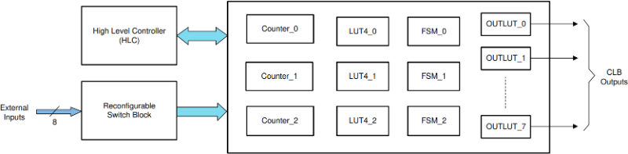
Inputs into each submodule can be the following:
CLB Boundary inputs
outputs from LUT4 blocks
outputs or states from FSM blocks
match conditions from Counter blocks
4-Input Lookup Table#
The 4-Input Lookup Table (LUT4) submodule allows for the realization of any combinatorial boolean equation of up to 4 inputs. It is composed of 4 inputs (IN0, IN1, IN2, and IN3) and a 16-bit function register that defines the output of the LUT4 block.
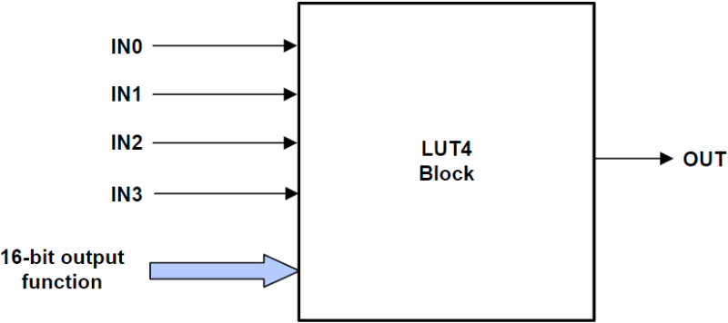
Finite State Machine#
The Finite State Machine (FSM) submodule can be used as a 4-state finite state machine or as two independent 2-state finite state machines. The finite state machine submodule can take in two external inputs as well as two extra external inputs. The FSM can generate two state outputs and one combinatorial output.
The FSM submodule is useful for implementing more complex logic than is possible on a simple look-up table. For example, if an application has a single input trigger but requires a system to perform a different operation based on the state of the system and the previous inputs that were received, an FSM can be used. Similarly, an FSM can be used to implement an end state which halts the system from registering any inputs when an end state is reached.
Inputs into the FSM submodule include two external inputs (EXT IN0 and EXT IN1). The submodule includes two 16-bit equation registers which define the states (S0 and S1) of the finite-state machine. An additional 16-bit equation register is available which defines the output of the FSM submodule.
If any FSM submodules have unused state bits, those submodules can instead be used as additional 3-input or 4-input LUTs. In this implementation, one or both of the extra external inputs (EXTRA EXT IN0 and EXTRA EXT IN1) override S0 and S1, respectively, and function as inputs for the 3-input or 4-input LUT.
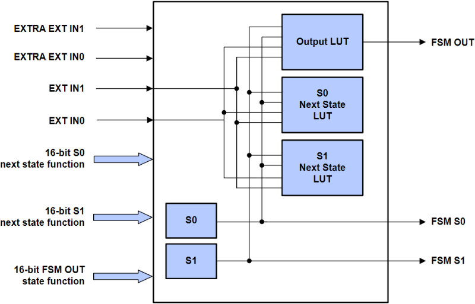
Counter#
The 32-bit Counter submodule can be configured either as an adder, a counter, or a shifter. As an adder, it can continually add or subtract a desired value. In counter mode, it can increment or decrement. Finally, as a shifter, it can shift left or shift right.
The RESET input of the counter submodule is the highest priority input, and when it is brought high, the value of the counter is reset to 0. The MODE 0 input acts as the enable for the counter, and the counter only counts when MODE 0 is high. The MODE 1 input determines the direction that the counter submodule counts in (when MODE 0 is high). If MODE 1 is low, the counter is set to decrement, and when MODE 1 is high, the counter is set to increment.
Each counter submodule has up to three match conditions: one zero match and two configurable nonzero matches (match1 and match2). These match conditions can be used as trigger signals for other submodules within the same tile. The counter submodule also has an event input which can trigger the counter to add, subtract, shift left, shift right, or load a specific value upon an event trigger.
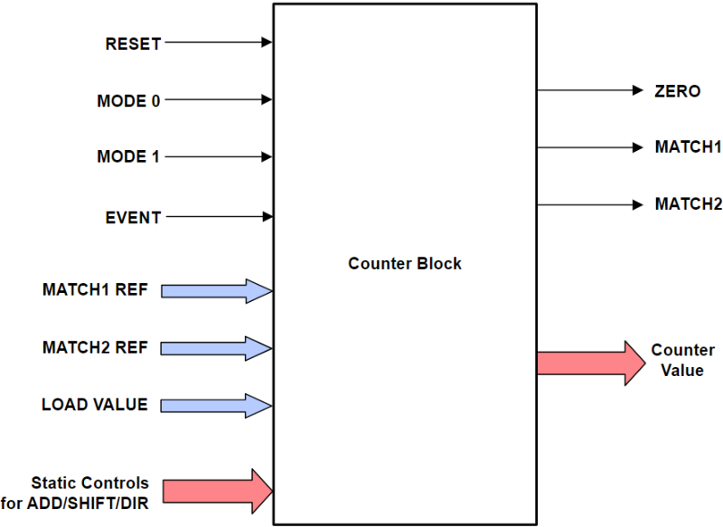
Two of the 32-bit Counter submodules can be combined together in a cascaded counter implementation to emulate a 64-bit counter. This extends the maximum effective counting limit from the 32-bit unsigned maximum of 4,294,967,295 to the 64-bit unsigned maximum of 18,446,744,073,709,551,615. Since a single tile contains only three Counter modules, the resulting effective counters are one 64-bit counter and one 32-bit counter. Three counters can be cascaded together to result in a 96-bit counter, if desired.
Cascaded Counter Configuration
To create the 64-bit cascaded counter within the CLB tile, two counters (in this configuration, COUNTER_0 and COUNTER_1) should be configured as follows:
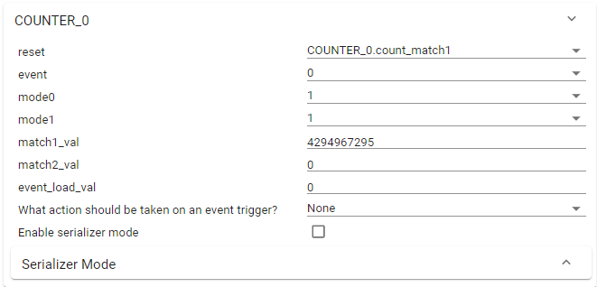
The primary counter is configured with a match1 value of 4,294,967,295 (maximum value of a 32-bit unsigned integer) and resets back to zero when the count reaches this match1 value. MODE0 and MODE1 are set to 1 so that the counter always increments, although the MODE0 enable bit can be set to another trigger condition depending on the implementation of the CLB.
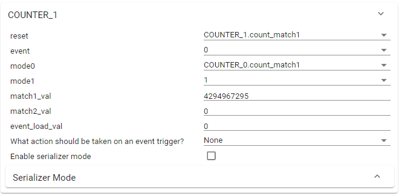
The secondary counter is configured as the overflow counter. Like the primary counter, it is configured with a match1 value of 4,294,967,295 and resets to zero when the counter reaches this maximum. MODE0 of this counter is configured as the match1 condition of the primary counter. This is so that the secondary counter only increments when the primary counter overflows. MODE1 is set to 1 to indicate the direction of count as positive. With this, the effective counting limit of COUNTER_0 and COUNTER_1 combined is the 64-bit unsigned integer maximum.
A similar implementation can be used to achieve a 96-bit counter, if desired.
On devices with CLB type 2 and later, the Counter has the ability to function as a 32-bit shift register (serializer). In serializer mode, the various Counter submodule configuration options are repurposed to shift data into and out of the serializer. The event input will be used to shift data into the serializer bit-by-bit and the two nonzero match conditions will used to trigger the tapping (shifting out) of the serial bits. The exact bit that gets tapped upon the match triggers can be configured using the corresponding match tap selection parameter.
In addition, CLB type 2 and later have the ability to operate the Counter as a linear feedback shift register (LFSR). The Counter is thus able to calculate the cyclic redundance check (CRC) value on a serial bit stream.
On devices with CLB type 3 and later, the Counter module can be configured to operate in pipeline mode. Pipelining enables the Counter’s event-triggered add/ sub/shift operations to use the value of the Counter in the previous cycle.
Examples showcasing these extended features of the counter submodule are available within the C2000Ware SDK.
Output 3-Input Lookup Table#
The Output 3-Input Lookup Table (OUTLUT) submodule allows for the realization of any combinatorial boolean equation of up to 3 inputs. These eight OUTLUT submodules correspond to the output BOUNDARY of the CLB tile. The data described in this submodule can be routed to other CLB tiles or outside of the CLB using the device’s crossbars.
Note: OUTLUT outputs cannot be used to drive the inputs on other submodule blocks within the same tile.
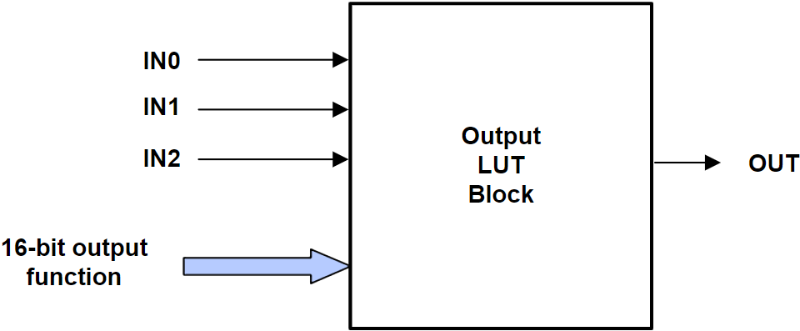
High-Level Controller#
The High-Level Controller (HLC) submodule is a powerful, event-driven block which can used to exchange data between the CLB and CPU and to issue interrupts. The HLC can have up to four concurrent events, each capable of realizing a specific set of instructions upon an event trigger. The lowest numbered event (Event 0) has the highest priority, and the highest numbered event (Event 3) has the lowest priority. There are also four registers that can be used to exchange data and modify/initialize values for the counter blocks.
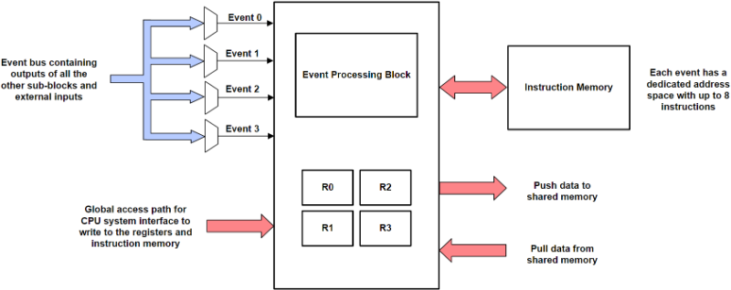
Each HLC event is composed of up to 8 instructions and has a trigger condition that signals when to execute the program. On devices with CLB type 2 or later, both the rising and falling edges of a signal can be used as the event trigger condition. On devices with CLB type 3 or later, the HLC has a pipeline mode which allows the HLC to access CLB TILE outputs delayed by one cycle.
All possible HLC instructions are listed in the table below. Note that R0, R1, R2, and R3 refer to the four registers located within the HLC. C0, C1, and C2 refer to the three counters located within the CLB tile.
Instruction |
Description |
|---|---|
ADD <Src> <Dest> |
This instruction performs a 32-bit unsigned addition, where <Dest> = <Dest> + <Src>. |
INTR <6-bit constant> |
This instruction will flag an interrupt through the CPU interface. |
MOV <Src> <Dest> |
This instruction moves <Src> to <Dest>. |
MOV_T1 <Src> <Dest> |
This instruction moves <Src> to the Match1 register of the <Dest> counter. |
MOV_T2 <Src> <Dest> |
This instruction moves <Src> to the Match2 register of the <Dest> counter. |
PULL <Dest> |
This instruction transfers data from the data exchange pull memory buffer |
PUSH <Src> |
This instruction transfers data from <Src> to the data exchange push memory buffer |
SUB <Src> <Dest> |
This instruction performs a 32-bit unsigned subtraction, where <Dest> = <Dest> - <Src>. |
Asynchronous Output Conditioning Block#
AOC Only on CLB Type 2 and Above
The output conditioning block is available only on device families with CLB Type 2 or later.
The Asynchronous Output Conditioning (AOC) Block submodule enables the filtering and modification of signals going into or coming out of the CLB. There are 8 inputs into the AOC Block. When configuring inputs into the AOC Block, either the respective BOUNDARY input or the respective BOUNDARY output can be selected. The signals pass through three different stages which are each responsible for performing a specific type of logic modification. The output of this AOC block is the modified version of the input which has undergone inverting, gating, release control, or some combination of the three.
-Stage 1 (Inverting): This stage allows for the input signal to be inverted.
-Stage 2 (Gating): This stage allows for the input signal to be gated (AND, OR, or XOR) with a gating control signal. This control signal can come from any of the CLB tile’s BOUNDARY outputs or from a software register.
-Stage 3 (Release Control): This stage allows for the input signal to be set or cleared with a gating control signal. Similarly to the gating stage, this control signal can be one of the CLB tile’s outputs or a software register.
For each of the stages, there is a bypass option which passes the signal unmodified to the next stage.
CLB Connections#
Connections into and out of the CLB are divided into three different buses.
The local input bus allows for dedicated connection to specific instances of ePWM, eQEP, and eCAP.
The global input bus is connected to other system peripherals and crossbars.
The output bus connects the outputs of the CLB to other peripherals on the device. It includes a set of external multiplexers that can be used to override the output of other peripherals.
CLB Tile Input Buses#
The local and global input buses allow for a wide variety of signals to be passed into the CLB.
The local input bus is primarily used to bring signals from the device’s control peripherals (ePWM, eQEP, eCAP) into the CLB. These include signals such as digital compare events and trip zones from ePWM, pulse signals from eQEP, and capture events from eCAP. In addition, on devices with CLB type 3 or later, input signals coming through the CLB Input X-BAR can be brought into the CLB using the local input bus.
The global input bus is used to bring in signals from other system peripherals. The CLB global input bus can be configured to accept CLB X-BAR auxiliary signals (AUXSIG), outputs from other CLB tiles, and various signals from ePWM, ERAD, FSI, and SPI. The MUX selection configuration for CLB inputs is shown in the following figure.
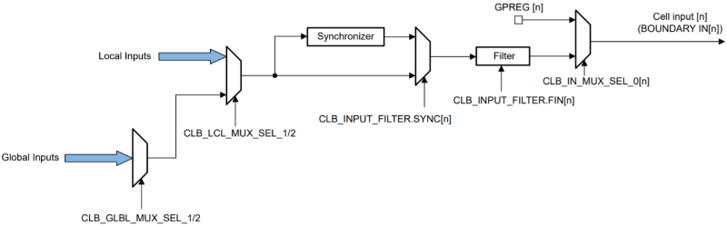
Important CLB Input Consideration
On the local input bus, CLB tiles are only configured to accept inputs from specific instances of other peripherals. For example, CLB1 can accept inputs from EPWM1, EQEP1, and ECAP1. Inputs from other instances of these peripherals, e.g. EPWM3 or EQEP2, cannot be used as inputs into CLB1. Likewise, CLB2 can accept inputs from only the second instance of these control peripherals, i.e. EPWM2, EQEP2, and ECAP2. This does not apply to signals that are brought in with the global input bus. Global input bus signals can be routed to any CLB tile on the device. Refer to the device’s TRM for details regarding specific peripheral inputs.
CLB Tile Input Filtering and Synchronization#
Inputs into the CLB can be further augmented using the CPU. The Input Select block of the CPU has input latching and filtering capabilities allowing for input filtering, rising-edge detection, falling-edge detection, and input synchronization. Furthermore, depending on the signal being passed to the CLB inputs, it may be necessary to enable the CLB input synchronizer to ensure that the input signal aligns with the CLB clock and its logic.
ASYNC Input Signals
Some peripheral and device signals are naturally asynchronous. For these input signals, it is mandatory to enable CLB input synchronization. Failure to do so may result in metastability hazards within the logic of the CLB. This metastability can cause errors depending on the voltage, temperature, and wafer fab process. Do note that this requirement is in addition to and separate from the GPIO input synchronization. Refer to the device TRM for a comprehensive list of these ASYNC signals.
CLB Tile Software Triggering#
The GPREG register is a CPU-accessible register within each CLB tile that
connects to the BOUNDARY inputs of the tile. The eight bits of the GPREG
register correspond to the eight inputs of the CLB tile, and they can be
individually set to enable or disable their respective BOUNDARY inputs using
theCLB_setGPREG() function. For example, the following code clears the
GPREG register of CLB TILE1 then enables BOUNDARY_IN0 and BOUNDARY_IN1.
CLB_setGPREG(CLB1_BASE, 0); // GPREG: 0b00000000 CLB_setGPREG(CLB1_BASE, 1 << 0 | 1 << 1); // GPREG: 0b00000011
CLB Tile GPIO Inputs#
GPIOs can be routed into the CLB using a combination of the GPIO Input X-BAR and CLB X-BAR. With this, the GPIO becomes routed as an auxiliary signal (AUXSIG) through the global input bus.
First, the GPIO is routed through the GPIO input crossbar and assigned to one of the instances of Input X-BAR.
Afterwards, the chosen instance of Input X-BAR is connected to the CLB X-BAR.
The corresponding mux of the CLB X-BAR must be configured to route the GPIO signal to an AUXSIG.
The chosen AUXSIG input can then be configured as an input from the global signal bus.
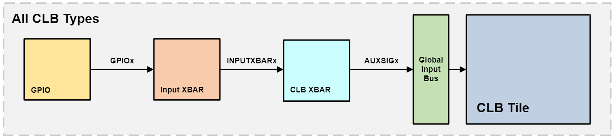
On devices with CLB type 3 or later, an alternate method can be used. On these devices, the CLB includes a dedicated CLB input crossbar (known as CLB INPUT X-BAR) which can directly route GPIO signals as inputs into the CLB. The desired GPIO signal is chosen through the CLB INPUT X-BAR and routed to the CLB through the local input bus.
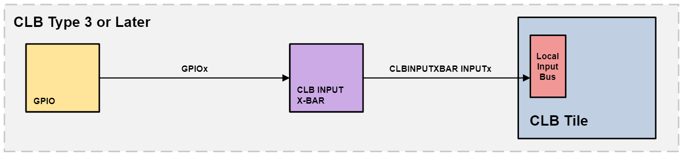
CLB Tile Output Replication#
Each of the eight outputs in a tile are replicated multiple times to be used as different output signals. For devices with CLB Type 1, each output is replicated twice to create 16 separate output signals. For example, output 0 (corresponding to OUTLUT0) corresponds to CLBx_OUT0 and CLBx_OUT8. Starting with CLB Type 2, these output signals are replicated four times for a total of 32 output signals. On these iterations of CLB, output 0 of CLBx corresponds to the following output signals: CLBx_OUT0, CLBx_OUT8, CLBx_OUT16, and CLBx_OUT24.
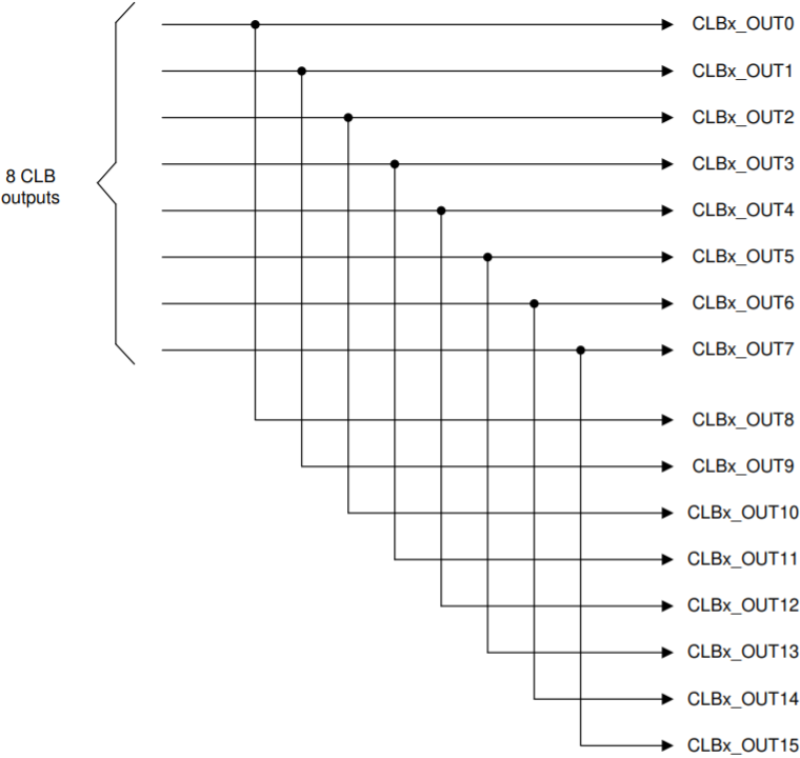
CLB Tile Peripheral Signal Overriding#
Each of the CLB outputs is fed into the Peripheral Signal Mux and has a separate enable bit defined in the CLB Output enable register, CLB_OUT_EN. Enabling this bit will force the CLB output to override the peripheral signal corresponding to that output. Specific peripheral signal information can be found in the device’s TRM.
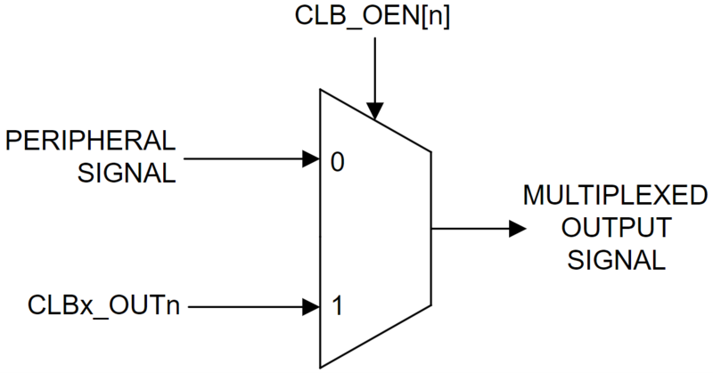
CLB Tile GPIO Outputs#
The CLB can output signals directly to the GPIOs of the C2000 device. To output the CLB signal to the GPIO pins, the GPIO Output X-BAR must be configured to route the CLB tile output to an instance of Output X-BAR. The GPIO Output X-Bar is only connected to outputs 4 and 5 of each CLB tile, and the specific mux corresponding to the desired CLB output must be chosen.
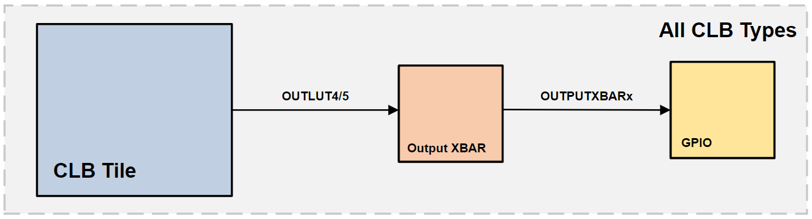
On devices with CLB type 3 or later, the CLB has a dedicated CLB output crossbar (known as CLB OUTPUT X-BAR). Each CLB tile output has a dedicated mux in the CLB output crossbar. This mux can be configured to an instance of a CLB Output X-Bar which brings the signal to a GPIO. With this approach, any of the outputs of the CLB can be driven to a GPIO.
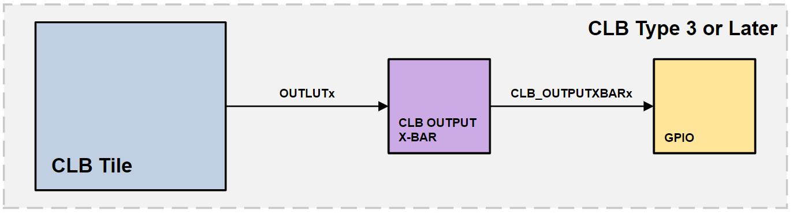
Connecting Multiple CLB Tiles#
Multiple CLB tiles can be strung together to enable greater CLB functionality for applications which require complex custom logic. To do this, the outputs of one tile (CLBx) can be used as inputs into another tile (CLBy). This can be done in various ways:
Connect OUTLUT4 and/or OUTLUT5 of CLBx to any of the eight BOUNDARY inputs of CLBy. This uses the CLB X-BAR and Global Signals Mux, and these should be configured appropriately.
Any of the eight outputs (OUTLUT0-7) of CLBx can be connected to a GPIO. This signal can then be brought back into the CLB peripheral using the INPUT X-BAR. It can then be used as the BOUNDARY inputs of CLBy using the CLB X-BAR and the Global Signals Mux.
Bring any of the eight outputs of CLBx to the Global Mux using the respective replicated outputs, CLBx_OUT16 through CLBx_OUT23. Use these signals from the global mux as inputs into another CLB tile.
CLB Interrupts#
The High-Level Controller within the CLB provides a mechanism to send interrupts to the CPU. This enables further manipulation of the registers, counters, and data within the CLB and allows the CPU to execute actions based on the logic within the CLB. The CLB interrupt can also be used to trigger CLA and DMA transfers.
Differentiating Between HLC Interrupts#
Each CLB tile has access to an interrupt handler that can perform operations when the HLC generates an interrupt. However, because all four events within the HLC share the same interrupt handler, it is advantageous to be able to distinguish between different event interrupts and perform different actions accordingly. The CPU is able to do this using distinct interrupt tags generated by the different events. For example, observe the following code excerpt:
#define COUNTER0_INT_TAG 11
#define COUNTER1_INT_TAG 12
void main(void)
{
// code to instantiate any relevant device peripherals
...
}
__interrupt void clb1ISR(void)
{
uint16_t tag = CLB_getInterruptTag(myTILE1_BASE);
if (tag == COUNTER0_INT_TAG)
{
GPIO_togglePin(myGPIO0);
}
if (tag == COUNTER1_INT_TAG)
{
GPIO_togglePin(myGPIO1);
}
CLB_clearInterruptTag(myTILE1_BASE);
Interrupt_clearACKGroup(INTERRUPT_ACK_GROUP5);
}
Within each HLC event’s program code, an interrupt and respective interrupt tag
can be generated usingINTR <interrupt_tag>. The CPU is able to
distinguish between these events by grabbing the interrupt tag with the
CLB_getInterruptTag(CLB_BASE) function. In the excerpt code, a different
GPIO pin is toggled depending on which CLB Counter (and corresponding HLC
event) triggers the interrupt. Being able to differentiate between different
interrupts enables the CPU to perform different condition-based actions all
within the same interrupt handler.
Interfacing with the FIFO#
Data exchange between the HLC and the CPU occurs through a shared memory buffer (FIFO). There are separate FIFO buffers for the PUSH and PULL operations. The size of the PUSH and PULL FIFOs is four 32-bit words each. Exchanging data between the CLB and CPU can be useful when needing to acquire and process the data stored in the CLB, or when needing to dynamically overwrite the Counter and HLC register values. The following driverlib functions allow for interfacing with and manipulating the data within the FIFO.
Function |
Description |
|---|---|
|
This function can be used to clear all data within the FIFO. |
|
This function can be used to read data that is pushed to the FIFO before an interrupt call. The read data is stored in an array. |
|
This function can be used to write data to the FIFO. This function implicitly clears the FIFO before writing to it. This written data can then be pulled into CLB and read upon an interrupt trigger. |
The values within the CLB can also be directly accessed without use of the
FIFO. Values within the Counter registers and HLC registers can be obtained
using theCLB_getRegister(CLB_BASE, CLB_REG) function, passing in the
respective register to be read.
Likewise, it is possible to move data using the R0, R1, R2, and R3 HLC
registers, which are directly accessible by the CPU. Values can be written to
all of the registers usings theCLB_setHLCRegisters(CLB_BASE, R0_VAL, R1_VAL, R2_VAL, R3_VAL)
function or to individual registers using theCLB_writeInterface(CLB_BASE, REG_ADDR, REG_VAL).
The HLC can then use a MOV,MOV_T1, orMOV_T2 instruction to
move the register value to another register.
CLB Development Tools#
Along with configuration capabilities, the CLB tool also provides simulation and visualization functionality to ease in designing with CLB and to help verify logic. These files are automatically generated by the CLB Tool and can be imported into external programs to assist in validating the design.
CLB Visualization#
One of the generated files from the CLB tool is clb.dot. This file describes the interconnections between each of the submodules within the CLB in a graphical form. The contents of this file can be exported to any Graphviz-compatible program to view the diagram. The following figure showcases an example of the CLB submodule visualization.
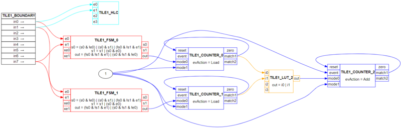
CLB Simulation#
The CLB Tool generates a clb_sim.cpp. This file should be compiled with other relevant CLB simulation models using a GCC compiler to generate an executable file. Executing this file generates a CLB.vcd file which can be loaded into any external graph viewer application to view the timing simulations for the CLB design. The following figure is an example of a design simulation viewed using GTKWave. The CLB’s input signals can all be adjusted to view logic outputs for relevant test cases, enabling a comprehensive testing and debugging process.
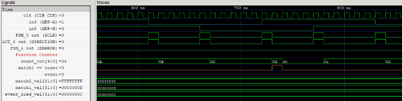
Debugging CLB Logic#
When developing logic with the Configurable Logic Block, there could be
instances where you may want to debug the logic implementation for your CLB
peripheral. Apart from using the visualization and simulation capabilities
described in the CLB Development Tools section, the
points below describe other methods for debugging and troubleshooting a CLB
implementation.
Oscilloscope Monitoring#
The logic within the CLB can be monitored using an oscilloscope. To do this, connect the desired signal to one of the OUTLUTs of the CLB tile. Bring out the signal to an available GPIO pin as described in the CLB Tile GPIO Outputs section. Now, it is possible to monitor the CLB signal by probing the selected GPIO pin with the scope.
CLB Register Monitoring#
Another method of debugging the logic within the CLB peripheral is to monitor the CLB registers. Each CLB tile has three categories of registers which hold the logic, configurations, and data within the CLB peripheral. Refer to the specific device’s TRM for the exact address of each of the CLB registers.
CLB Tile Logic Config Regs (CLBx_LOGICCFG_BASE)
The Logic Configuration registers hold the configuration information for each of the submodules within the CLB tile. For example, this includes information like the combinatorial logic equations for the LUT4 and OUTLUT blocks, the event selectors for the HLC, and the reset events for the COUNTER blocks.
CLB Tile Logic Control Regs (CLBx_LOGICCTRL_BASE)
The Logic Control registers hold the information related to the inputs and outputs of the CLB tile. For example, it holds the input selection for each CLB tile input, the output enable selection, the GPREG registers, among other registers. It also contains the HLC registers and the values of each of the CLB COUNTER blocks.
CLB Tile Data Exchange Regs (CLBx_DATAEXCH_BASE)
The Data Exchange registers hold the PUSH and PULL FIFO registers that are responsible for transferring data into and out of the CLB.
Emulation Modes#
It is possible to make use of the C2000 device’s different emulation modes to debug the logic within the CLB. With the various emulation modes, you can run through the program and halt it at specific breakpoints throughout the code. You can then choose to have the on-device peripherals continually running at this halted point and monitor the logic and execution of the CLB. To do this, ensure that real-time emulation mode is enabled while running a debug session. To learn more about the different emulation modes on the device, refer to the device’s TRM.
Resources#
Feedback
Please provide any feedback you may have about the content within C2000 Academy to: c2000_academy_feedback@list.ti.com